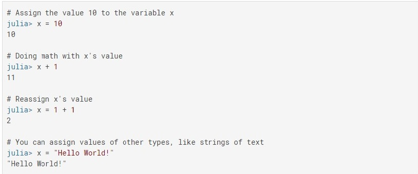
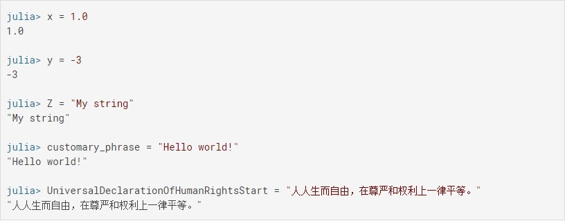
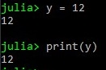
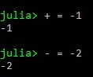
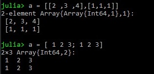
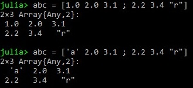
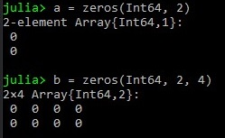

Variables y tipo de datos
Declaración variables
Una variable en Julia es un nombre el cual tiene asociado un valor
Julia provee un sistema extremadamente flexible para nombrar variables. Los nombres de las variables son sensibles a minúsculas y mayúsculas, y no tienen significado semántico (es decir, el lenguaje no tratará las variables de manera diferente en función de sus nombres).
La sintaxis es tan simple como hacer:
Reglas para la creación de variables
Los identificadores(variables) deberán empezar por una letra (A-Z o a-z), luego pueden seguir caracteres o números (0-9), algunos signos diacríticos u otros modificadores (- , _ ). Estos nombres no pueden ser palabras reservadas o signos que representen funciones (+, -, *, . , ,…) Existen casos especiales como:
| Tipo | Asignación relacion |
|---|---|
Int |
x = 2, y = 5666 |
Float |
x = 2.0 y = 123.34343 |
Arrays |
vector = [ ] matriz = [ [3, 6],[1, 2] ] matriz3 = [["a", "b"],["c"],["d", "e"]] matriz = ['a' 2.0 3.1 ; 2.2 3.4 "r"] |
Strings |
x = "Hello world" y = "Hola" |
Char |
x = 'a' y = '$' |
Boolean |
x = y = |
Struct |
Struct punto x::Int y::Int end |
Segun la tabla, es bastante facil declarar variables de los tipos básicos, cabe destacar que en la declaración de arrays es recomendable usar a = [1 2 3; 4 5 6] para declarar arreglos de multiples dimensiones, ya para el compilador de Julia dice que no es lo mismo a = [[1, 2, 3], [4, 5, 6]]
También como se observa en la tabla los arrays pueden contener cualquier tipo de dato, ya que el compilador tomará este array como un tipo abstracto any
En julia existen funciones que generan datos de diferentes tipos
Un ejemplo muy claro es la función Zeros() o Zero()
Otra cosa es que podemos declarar los tipos: